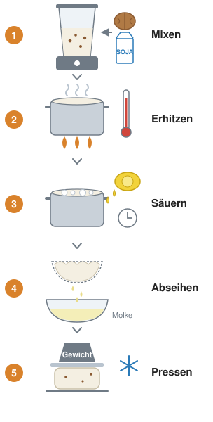

Einstieg
Vier Ebenen in einem Sojaprotein: Glycinin
Glycinin ist das Hauptprotein der Sojabohne und damit des Sojadrinks. Ziehen dreht das Molekül, Mausrad oder zwei Finger zoomen. Klicken Sie rechts eine Strukturebene an.
Elektrophorese: Wohin wandern geladene Teilchen?
Im Escape Game (Station 4) lief die Papierelektrophorese bei pH 6,0. Hier können Sie den pH-Wert des Puffers ändern. Positiv geladene Teilchen wandern zur Kathode (−), negativ geladene zur Anode (+), ungeladene bleiben am Start.
Hilfekarten
Erst selbst probieren. Jede Karte deckt ihre Hilfe in Stufen auf, so wenig wie möglich, so viel wie nötig.
Hilfe zu 1b
Hilfe zu 2b
Hilfe zu 3a
Hilfe zu 3b
Hilfe zu 4a
Hilfe zu 4b
Hilfe zu 4c
Vertiefungen
★ = vertiefend · ★★ = anspruchsvoll. Die Ergebnisse gehören in Ihre Unterlagen; die Abbildungen und Werkzeuge helfen beim Denken, sie ersetzen keine Lösung.
Wann verschwindet die Ladung?
Der isoelektrische Punkt ist der pH-Wert, bei dem sich positive und negative Ladungen eines Proteins ausgleichen, wie beim Glycin-Zwitterion aus Sitzung 05. Der Regler rechnet mit einem Modellprotein, die Zahlen sind ausgedacht, liegen aber in einem für Sojaproteine plausiblen Bereich.
Warum gerinnt Tofu mit Salz?
Klassischer Tofu gerinnt durch Magnesium- oder Calciumsalze, der pH-Wert ändert sich dabei kaum. Calcium-Ionen vernetzen Sojaproteine.
Molke und Casein im Bruch
Erhitzt man Milch kräftig, bindet sich β-Lactoglobulin über Disulfidbrücken an die Oberfläche der Caseinmizellen. Säuert man danach an, fällt es mit aus.
Flocken im Kaffee: auch schon Koagulation?
Gibt man Sojadrink in heißen Kaffee, sieht man oft feine Flocken (Foto: Kaffee mit Sojadrink, in der Mikrowelle erhitzt). Ist der Kaffee dafür sauer genug wie der Zitronensaft im Ricotta-Rezept, oder reicht schon eine leichte Senkung des pH-Werts?
Filterkaffee hat pH 4,85–5,10, Zitronensaft etwa pH 2–2,5 (Rao, Fuller, Sci. Rep. 8, 2018, 16030). Der isoelektrische Bereich der Sojaproteine liegt bei pH 4,5–5,9. In Laborversuchen trennten sich Sojadrink-Kaffee-Gemische nur oberhalb einer bestimmten Temperatur in zwei Phasen und wurden beim Abkühlen oder mit mehr Sojadrink wieder einheitlich (Brown et al., Food Hydrocolloids 95, 2019, 462).

Ricotta aus Sojadrink und Walnüssen
Zutaten: 500 g Sojadrink, 125 g Walnüsse, 25 g Zitronensaft (etwa eine halbe Zitrone). Dazu Mixer, Topf, Sieb, Baumwolltuch.
- Mixen: Sojadrink und Walnüsse fein pürieren.
- Erhitzen: fast zum Kochen bringen (≈ 90–95 °C), dann die Hitze ausschalten.
- Säuern: Zitronensaft einrühren, Topf abdecken, 20 Minuten ruhen lassen. Es bilden sich Flocken.
- Abseihen: durch ein Baumwolltuch im Sieb gießen, die Molke läuft ab.
- Pressen: im Tuch beschweren und über Nacht im Kühlschrank fest werden lassen.
Zum Servieren eine Prise Salz und etwas Öl, süß mit Feige oder Agavensirup. Zu Hause nachmachen, nicht im Fachraum. Allergene: Soja, Walnuss.
